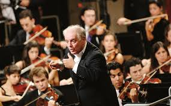
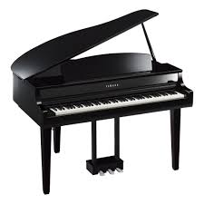

Música Clásica
La Grandeza del Arte Eterno
La música clásica es el lenguaje universal que trasciende el tiempo y el espacio. Desde Bach, Beethoven y Mozart hasta compositores modernos, la música clásica se presenta como una expresión sublime de arte humano. Es música para el alma, un refugio que nunca pasa de moda.
Instrumentos Claves para la Música Clásica

Piano
Fundamental para solos y acompañamientos en la música clásica.

Violín
Destacado por su expresividad y versatilidad dentro de la orquesta.
Violoncello
Proporciona profundidad con tonos cálidos y resonantes.
Flauta
Con un sonido ligero y melódico, destaca en piezas orquestales.
Timbales
Potencia rítmica y dramatismo en composiciones clásicas.